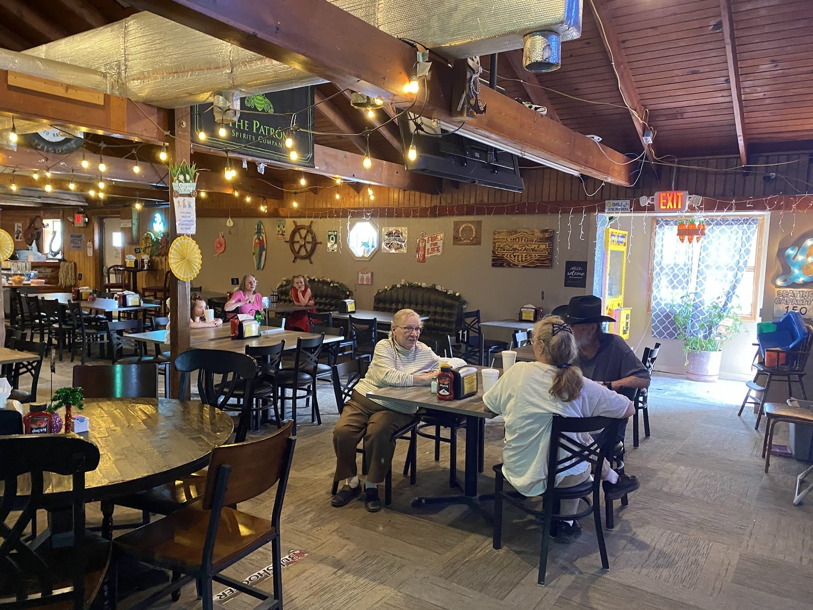

Breaded tenderloin
Huge, juicy and seasoned just right. Comes with fresh tomato and all the fixings. Onion rings on the side.
Family restaurant and bar · Cloverdale, IN
Huge breaded tenderloins and onion rings. A bar with pool and karaoke next door.

A huge, juicy breaded tenderloin with onion rings on the side. Come hungry.
Huge, juicy and seasoned just right. Comes with fresh tomato and all the fixings. Onion rings on the side.

Saturday and Sunday, 8 AM to 11 AM. Hearty plates at reasonable prices.

A bar on its own side of the lodge. Fair drink prices, good selection, pool and karaoke.


4.4 266 Google reviews
We stopped by on Friday 7/24/26 for dinner. Had the breaded tenderloin OMG was it delicious!! It was huge, juicy and had wonderful taste. The bartender I believe was our waitress and she was absolutely the best. Will definitely be back to try other items on menu!!! If I could give 10 stars they sure would get it !! Thank You for great dinner, wonderful food and amazing service.
We stopped in for a tenderloin and we are so glad we did it was wonderful they are huge but still juicy and flavorful they were seasoned perfectly the breading was so yummy we also have onion rings and they were perfect we will definitely be back that was the best tenderloins we've had in so long I can't remember the service…
We stopped in for lunch and ate the best tenderloin we have ever eaten. It came with 2 buns and all the fixins'. The FRESH tomato tasted like it was picked from the vine. The meal fed 2 of us with leftover

Two sides under one roof: family dining and a bar. New owners and management since June 13, 2022. Wood beams, string lights and a disco ball.
Friendly staff, fair drink prices, and pool and karaoke in the evenings.
4779 IN-42, Cloverdale, IN 46120
Dining on one side, the bar on the other. Breakfast Sat–Sun, 8 to 11. Carry out available.